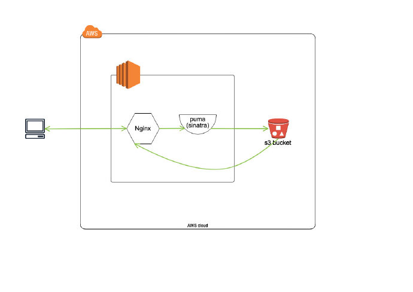
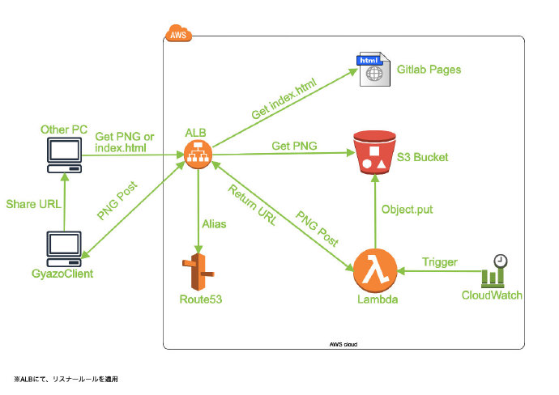

久しぶりに、ブログを更新しないと〜
転職してからはや2ヶ月、入場した時と比べて、だいぶ仕事が増えました。（喜ぶところかなぁ？）
最近は、サーバレスを中心に何件ものサービスを再構築しましたので、今回その一つのGyazoというサービスについて、お話しようを思います。
予備知識
- Gyazoとは
一言で言うと、一瞬で取ったスクショを共有できるサービスです。 - GyazoのGithubページ
一般サービスとしても利用可能ですが、会社で使う時、機密情報などに配慮して、やはり自社専用のものがいいかも。 - サーバーレスな社内Gyazoの作り方(AWS SAM+Api Gateway+Lambda(Ruby)+S3)
重点的に参考させていただきました記事です。
なぜやったの？
- 元々、社内Gyazoとして、AWSのEC２を立て、ストレージをS3にし、実際利用何年も利用されている
- サーバの面倒をみないといけないので、そろそろ辛い感が表に出そう
- 操作ミスで本番EC2インスタンスが削除された事故があったみたい
- 業務改善とコスト低減の旗のもと、サーバレスアーキテクチャをどんどんやりたい
- 新参者の自分には、このようなサービスのインパクトが丁度いい
どうやったの？
元々の設計は以下となります。

ご察知の通り、かなりシンプルの構造です。
rubyのsinatraをAPPサーバーにし、Nginxを先頭に構え、後ろはS3バケットをストレージ、シンプルだが有効なアーキテクチャです。
実際、何年も問題なく、利用されていた。
今回の設計はこうだ

要件
- ユーザが指定カスタムドメインにアクセスすると、クライアントのダウンロードページと、機能説明ページを見える
- 1.のカスタムドメインに向けて、画像ファイルをPOSTすると、S3に保存され、アクセスできるURLが返される
- 2.で返されたURLにアクセスすると、画像が見える
- クライアントのコード改修をしない
- 社内しかアクセスできない
- リスポンスが許容範囲内にしておきたい、かつコストを抑える
よっしゃー、じゃ今から、それぞれをご説明いたします
Lambda関数
クライアントのコードをしたくないので、無理やりでも、BOUNDARY処理を行う！
| key | value |
|---|---|
| Runtime | Ruby2.5 |
| Handler | app.gyazo_upload |
| ENV | 下に掲載 |
rubyを使うので、gemファイルもアップしておこう〜
1 | source "https://rubygems.org" |
関心のlambda関数がキタァァァー
1 | require 'json' |
cloudwatch eventの空振り処理について、また後ほどお話しよう。
一応、ENVも貼っておきますー
1 | #写真保存先バケット名 |
S3 bucket
社内しかアクセスできないということにしたいので、S3バケットのアクセスポリシーを弄ってみます！
1 | { |
htmlページ
htmlページは割愛させてください。
社内gitlabのpages機能を使って、静的コンテンツをホスティングしています。
ALB & Route53
ここは今回の関心のところですね。
僕もずいぶん悩みました、なぜなら、元々のシステムでは、Nginxによるproxy_passで、URLを書き換えられることがあります。これによって、S3のendpointをユーザに隠し、ちょっとだけ短縮したURLを生成できた。
なので、後方互換性を保つため、Nginxの機能の代打も考えないといけない。
悩む末に、ALBのリスナールールを使うことになりました。
ルールは以下になります。
HTTP:80
1 | IF |
HTTPS:443
1 | IF |
この３つのルールが実現できる機能を説明すると、
- HTTPのリクエストが来たら、HTTPSにリダイレクト
- GETのリクエスト＋パスが/* /* /*の形だったら、S3が格納している指定オブジェクトを表示
- GETのリクエストが来たら、静的コンテンツをホスティングされているWEBページを表示
- 上記以外の場合、lambda関数に引き渡す
CloudWatch
ここはちょっとしたおまけですね。
実際にテストすると、しょっちゅうURLが返るまで時間かかると時がありました。
試行錯誤後、cloudwatch eventを設定し、3分1回指定のlambda関数を起動されることによって、常にlambda関数のアクティブ状態を確保できた。まぁ、ちょっとコストかかるが、これくらいならいいじゃないかなぁ〜
もちろん、lambda関数の方の空振り処理はこれのためです。
成果物
これで、ぱっとできる超簡単なスクショ共有サービス（ノーメンテ）バージョンが完成だ！
それでは、この辺に終わりにしましょうか。
お疲れ様でした〜